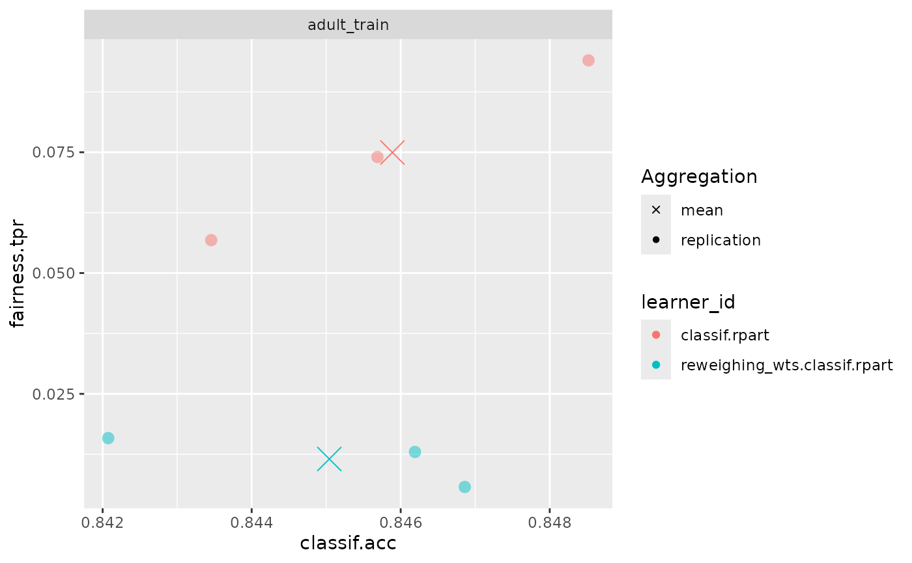

Introduction: Fairness Pipeline Operators
Given we detected some form of bias during bias auditing, we are
often interested in obtaining fair(er) models. There are several ways to
achieve this, such as collecting additional data or finding and fixing
errors in the data. Assuming there are no biases in the data and labels,
one other option is to debias models using either
preprocessing, postprocessing and
inprocessing methods. mlr3fairness
provides some operators as PipeOps for
mlr3pipelines. If you are not familiar with
mlr3pipelines, the mlr3 book
contains an introduction.
We again showcase debiasing using the adult_train
task:
library(mlr3)
library(mlr3fairness)
library(mlr3pipelines)
task = tsk("adult_train")Reweighing algorithms
mlr3fairness implements 2 reweighing-based algorithms:
reweighing_wts and reweighing_os.
reweighing_wts adds observation weights to a
Task that can counteract imbalances between the conditional
probabilities \(P(Y | pta)\).
| key | output.num | input.type.train | input.type.predict | output.type.train |
|---|---|---|---|---|
| EOd | 1 | TaskClassif | TaskClassif | NULL |
| reweighing_os | 1 | TaskClassif | TaskClassif | TaskClassif |
| reweighing_wts | 1 | TaskClassif | TaskClassif | TaskClassif |
We fist instantiate the PipeOp:
p1 = po("reweighing_wts")and directly add the weights:
t1 = p1$train(list(task))[[1]]Often we directly combine the PipeOp with a
Learner to automate the preprocessing (see
learner_rw). Below we instantiate a small benchmark
set.seed(4321)
learner = lrn("classif.rpart", cp = 0.005)
learner_rw = as_learner(po("reweighing_wts") %>>% learner)
grd = benchmark_grid(list(task), list(learner, learner_rw), rsmp("cv", folds=3))
bmr = benchmark(grd)We can now compute the metrics for our benchmark and see if reweighing actually improved fairness, measured via True Positive Rate (TPR) and classification accuracy (ACC):
bmr$aggregate(msrs(c("fairness.tpr", "fairness.acc")))
#> nr task_id learner_id resampling_id iters
#> <int> <char> <char> <char> <int>
#> 1: 1 adult_train classif.rpart cv 3
#> 2: 2 adult_train reweighing_wts.classif.rpart cv 3
#> fairness.tpr fairness.acc
#> <num> <num>
#> 1: 0.07494903 0.1162688
#> 2: 0.01151982 0.1054431
#> Hidden columns: resample_result
fairness_accuracy_tradeoff(bmr, msr("fairness.tpr"))
Our model became way fairer wrt. TPR but minimally worse wrt. accuracy!